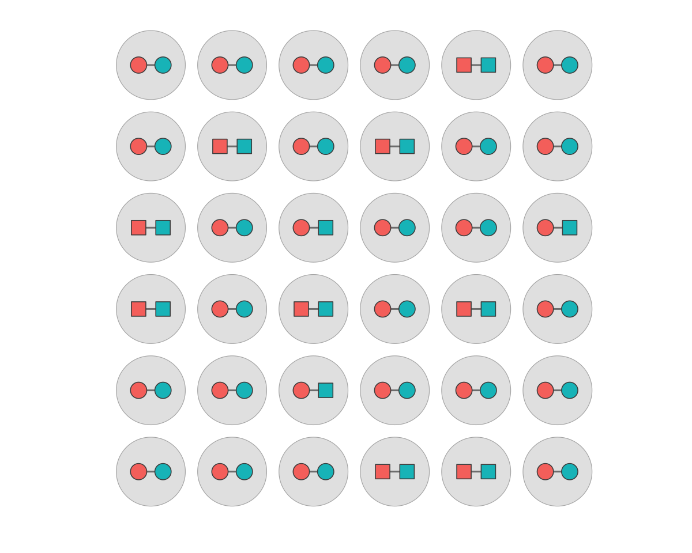
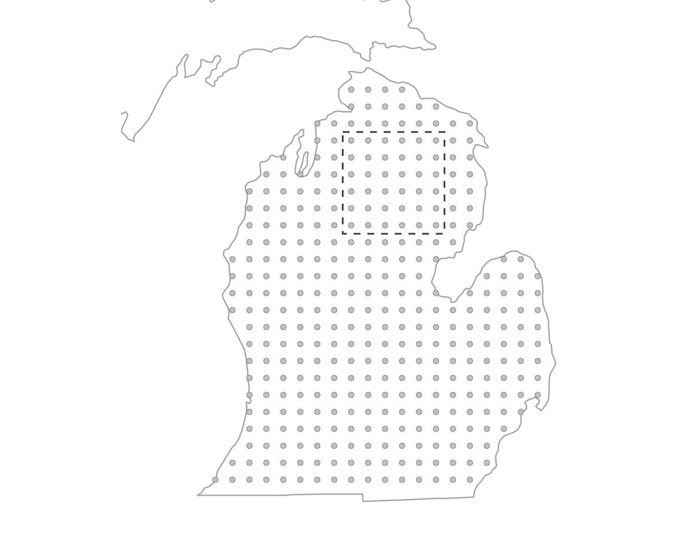
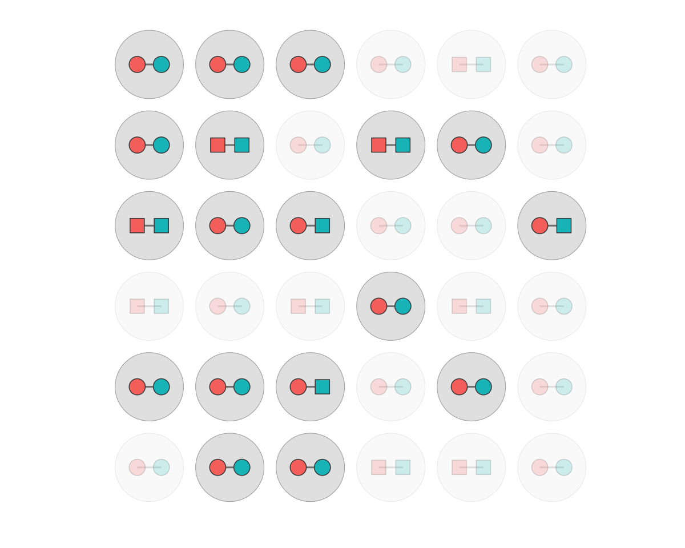
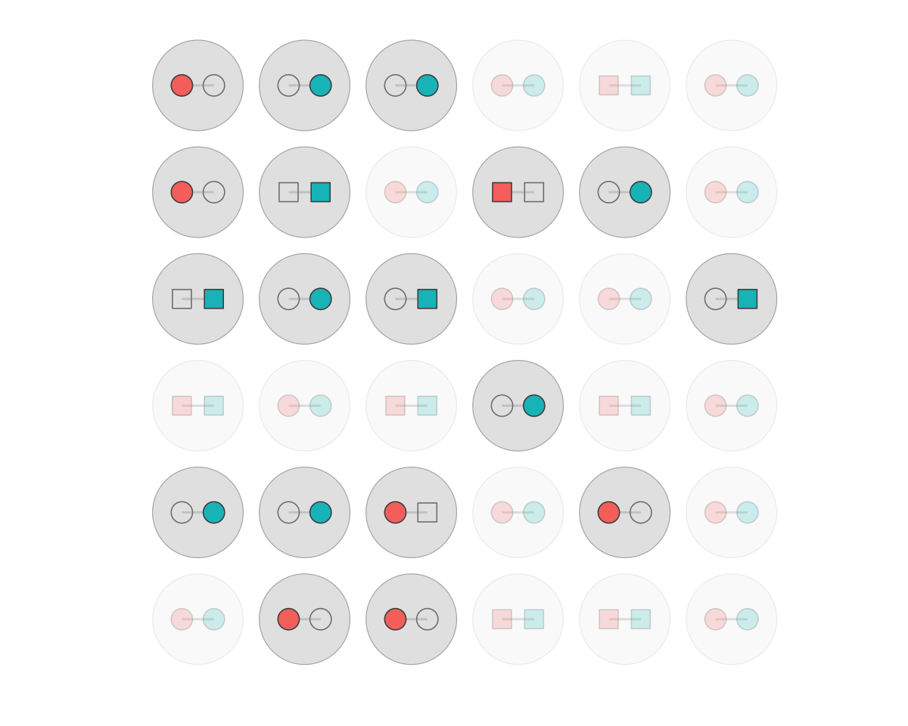
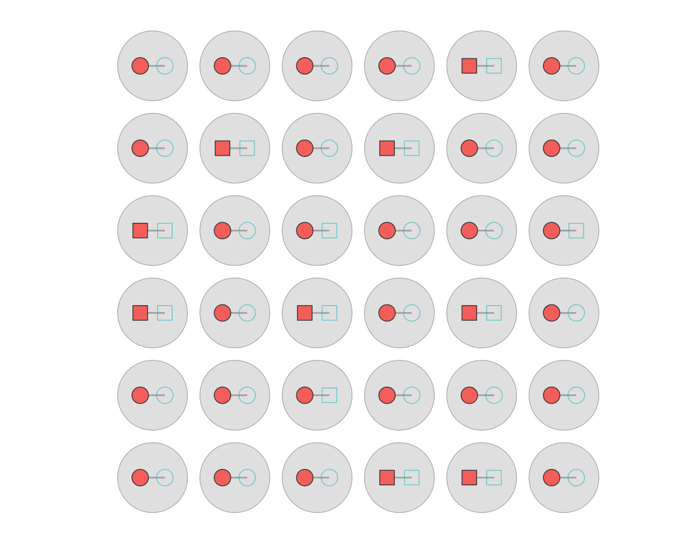
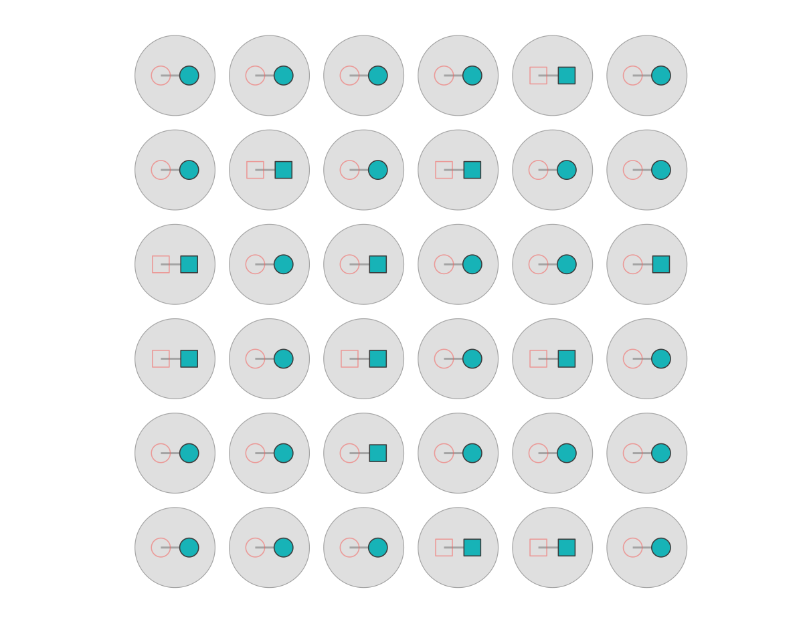
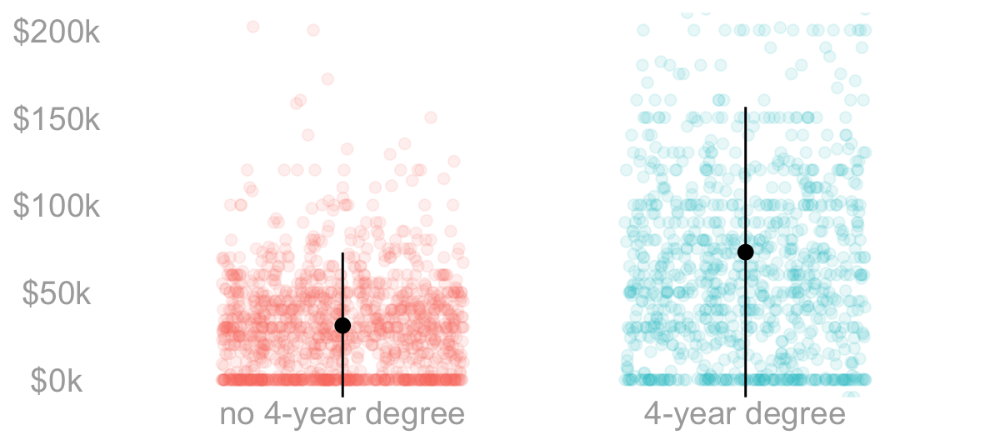
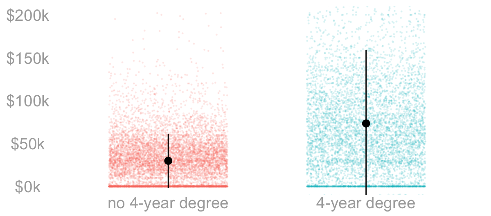
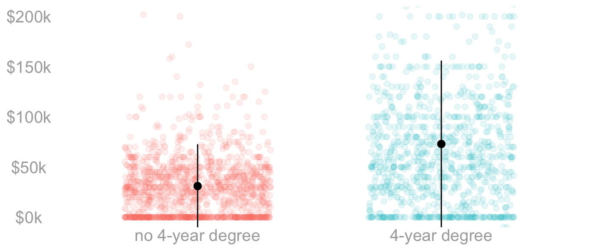

The Math of Independent Pairs
Michigan: The Ideal Case








- What is the average effect of the letter on turnout across Michigan households?
- Our model of the Gerber, Green and Larimer experiment in Michigan has two steps in its random mechanism.
- We sample households with replacement. Sample
- Then we flip a coin on each call to decide whether that household gets the letter. Flip coins
- This is not the random mechanism that was actually used, but close enough, easy to work with.
- It gives us independent and identically distributed pairs (W_1, Y_1) \ldots (W_n, Y_n).
- Imagine two copies of each household, one with the letter and one without. Double the grid
- Calling a household and flipping a fair coin gives each copy probability (1/m)(1/2)=1/(2m).
- That’s ordinary sampling from the doubled population.
- In that doubled population, the difference in mean turnout is the average treatment effect of the letter.
Subpopulations and Two-Stage Sampling


- Conditioning is, in effect, a way of thinking about sampling as a two-stage process.
- First, we choose the color of our dot, i.e., the value of W_i, with probability proportional to group size (m_w/m).
- Then, we choose a specific one of those dots, i.e. J_i, from those with that color—with equal probability.
- Multiplying the two stages’ probabilities gives back 1/m for every person.
- That’s our actual sampling model.
\P(J_i=j) = \begin{cases} \underset{\textcolor{gray}{\text{stage 1}}}{\frac{m_1}{m}} \times \underset{\textcolor{gray}{\text{stage 2}}}{\frac{1}{m_1}} = \frac{1}{m} & \text{if the $j$th dot is green ($w_j=1$)} \\ \frac{m_0}{m} \times \frac{1}{m_0} = \frac{1}{m} & \text{otherwise} \end{cases}
- The first stage is ‘a coin flip’ that decides whether we roll the ‘red die’ or the ‘green die’ in the second.
- We formalize this factorization into stages by talking about conditioning.
Conditional Probability


- We define conditional probability so we can always do this multiplication.
\begin{aligned} \underset{\textcolor{gray}{\text{stage 1}}}{\P(W=w)} \times \underset{\textcolor{gray}{\text{stage 2}}}{\P(Y=y \mid W=w)} &= \P(W=w, Y=y) \\ \qqtext{so} \P(Y=y\mid W=w) &= \frac{\P(W=w,Y=y)}{\P(W=w)}. \end{aligned}
- When we use the definition, it works out. It’s rolling the green die.
\begin{aligned} \P(W_i=1, J_i=j) &\overset{\texttip{\small{\text{?}}}{Calling person $j$ shows us their label $w_j$. So both happen only when $w_j=1$, and then it's the chance of calling $j$.}}{=} \begin{cases} 1/m & \text{when } w_j=1 \\ 0 & \text{when } w_j=0 \end{cases} = 1_{=1}(w_j) \times \frac{1}{m} \\ \P(W_i=1) &\overset{\texttip{\small{\text{?}}}{Add the line above over everyone we could call. Each of the $m_1$ graduates contributes $1/m$.}}{=} \sum_{j=1}^m 1_{=1}(w_j) \times \frac{1}{m} = \frac{m_1}{m} \\ \P(J_i=j \mid W_i=1) &\overset{\texttip{\small{\text{?}}}{The definition: divide the first line by the second.}}{=} \frac{1_{=1}(w_j) \times \frac{1}{m}}{\frac{m_1}{m}} = \frac{1_{=1}(w_j)}{m_1}. \end{aligned}
That’s 1/m_1 for each graduate and 0 for everyone else.
The Conditional Probability of Y_i is the probability resulting from the second stage.
- \P(Y_i=y \mid W_i=1) is the probability distribution of Y_i when we’re ‘rolling the green die’.
- \P(Y_i=y \mid W_i=0) is the probability distribution of Y_i when we’re ‘rolling the red die’.
Conditional Expectation and Variance


- Conditional expectation and conditional variance are expectation and variance over this distribution.
\begin{aligned} \mathop{\mathrm{E}}\cb{f(Y)\mid W=w} &\overset{\texttip{\small{\text{?}}}{Multiply each value of $f(y)$ by its conditional probability and add.}}{=} \sum_y f(y)\,\P(Y=y\mid W=w) \\ \mathop{\mathrm{\mathop{\mathrm{V}}}}(Y\mid W=w) &\overset{\texttip{\small{\text{?}}}{The conditional expectation of the squared deviation from the conditional mean.}}{=} \mathop{\mathrm{E}}\sb{\cb{Y-\mathop{\mathrm{E}}(Y\mid W=w)}^2 \mid W=w}. \end{aligned}
- The Conditional Expectation of Y_i is the ‘second stage expected value’ in the same sense.
- \mathop{\mathrm{E}}[Y_i \mid W_i=1] is the expected value of Y_i when we’re ‘rolling the green die’.
- \mathop{\mathrm{E}}[Y_i \mid W_i=0] is the expected value of Y_i when we’re ‘rolling the red die’.
- The Conditional Variance of Y_i is like this too. It’s the ‘second stage variance.’
- \mathop{\mathrm{\mathop{\mathrm{V}}}}[Y_i \mid W_i=1] is the variance of Y_i when we’re ‘rolling the green die’.
- \mathop{\mathrm{\mathop{\mathrm{V}}}}[Y_i \mid W_i=0] is the variance of Y_i when we’re ‘rolling the red die’.
- Claim. \mathop{\mathrm{E}}[Y \mid W=w] and \mathop{\mathrm{\mathop{\mathrm{V}}}}[Y \mid W=w] are the mean \mu(w) and variance \sigma^2(w) of the responses in the subpopulation with w_j=w.
- Proof.
\begin{aligned} \mathop{\mathrm{E}}[Y_i \mid W_i=1] &= \mathop{\mathrm{E}}[y_{J_i} \mid W_i=1] = \sum_{j=1}^m y_j\,\P(J_i=j \mid W_i=1) \\ &= \sum_{j=1}^m y_j \times \frac{1_{=1}(w_j)}{m_1} = \frac{1}{m_1}\sum_{j=1}^m 1_{=1}(w_j)\, y_j = \mu(1) \\ \mathop{\mathrm{\mathop{\mathrm{V}}}}[Y_i \mid W_i=1] &= \sum_{j=1}^m \cb{y_j-\mu(1)}^2\,\P(J_i=j \mid W_i=1) \\ &= \sum_{j=1}^m \cb{y_j-\mu(1)}^2 \times \frac{1_{=1}(w_j)}{m_1} = \frac{1}{m_1}\sum_{j=1}^m 1_{=1}(w_j) \cb{y_j-\mu(1)}^2 = \sigma^2(1) \end{aligned}
What If Every Michigan Household Got the Letter?


- What would mean turnout be if nobody got the letter?
- What would it be if every household got the letter?
- That’s a causal question. It’s about the potential outcomes.
\mu_C(w)=\frac{1}{m}\sum_{j=1}^m y_j(w) \qqtext{is mean turnout if every household got assignment $w$.}
- Identification reduces a question about the distribution of potential outcomes in a population …
- … to one about the distribution of the observed data.
- We say that a causal estimand is identified by a random mechanism if this can be done.
- That is, if the causal question has a statistical answer.
- Q. Do sampling with replacement and a coin flip identify \mu_C(w)?
🔧 Preflipping Is Stratified Sampling


- Intuition. If we flip all our coins first, all that’s left is rolling the green die on some calls and the red die on the others. That’s stratified sampling.
- Claim. When the pairs (W_1,Y_1) \ldots (W_n,Y_n) are independent and identically distributed, the conditional distribution of (Y_1 \ldots Y_n) given W_1=w_1 \ldots W_n=w_n is the (unconditional) distribution of responses when we use stratified sampling with replacement, with call i drawn from group w_i.
\begin{aligned} &\P(Y_1=y_1 \ldots Y_n=y_n \mid W_1=w_1 \ldots W_n=w_n) \\ &= \cb*{\prod_{i: w_i=1} \P_1(y_i)} \cb*{\prod_{i: w_i=0} \P_0(y_i)} \qqtext{for} \P_w(y) = \P(Y_i=y \mid W_i=w). \end{aligned}
- Proof.
\begin{aligned} &\P(Y_1=y_1 \ldots Y_n=y_n \mid W_1=w_1 \ldots W_n=w_n) \\ &\overset{\texttip{\small{\text{?}}}{The definition of conditional probability.}}{=} \frac{\P(W_1=w_1, Y_1=y_1 \ldots W_n=w_n, Y_n=y_n)}{\P(W_1=w_1 \ldots W_n=w_n)} \\ &\overset{\texttip{\small{\text{?}}}{The pairs are independent, so the numerator is the product of the pair probabilities.}}{=} \frac{\P(W_1=w_1, Y_1=y_1) \cdots \P(W_n=w_n, Y_n=y_n)}{\P(W_1=w_1 \ldots W_n=w_n)} \\ &\overset{\texttip{\small{\text{?}}}{The labels are independent, so the denominator is the product of the label probabilities.}}{=} \frac{\P(W_1=w_1, Y_1=y_1) \cdots \P(W_n=w_n, Y_n=y_n)}{\P(W_1=w_1) \cdots \P(W_n=w_n)} \\ &\overset{\texttip{\small{\text{?}}}{A fraction of products is a product of fractions.}}{=} \frac{\P(W_1=w_1, Y_1=y_1)}{\P(W_1=w_1)} \cdots \frac{\P(W_n=w_n, Y_n=y_n)}{\P(W_n=w_n)} \\ &\overset{\texttip{\small{\text{?}}}{The definition of conditional probability, once for each call.}}{=} \P(Y_1=y_1 \mid W_1=w_1) \cdots \P(Y_n=y_n \mid W_n=w_n) \\ &\overset{\texttip{\small{\text{?}}}{The definition of $\P_w$.}}{=} \P_{w_1}(y_1) \cdots \P_{w_n}(y_n) \\ &\overset{\texttip{\small{\text{?}}}{Group the factors with $w_i=1$ and the factors with $w_i=0$.}}{=} \cb*{\prod_{i: w_i=1} \P_1(y_i)} \cb*{\prod_{i: w_i=0} \P_0(y_i)}. \end{aligned}
From Conditional to Unconditional


- We have these results conditionally.
\begin{aligned} \mathop{\mathrm{E}}\cb{\hat\mu(w) \mid W_1 \ldots W_n} &= \mu(w) &&\qqtext{when} N_w > 0 \\ \mathop{\mathrm{\mathop{\mathrm{V}}}}\cb{\hat\mu(w) \mid W_1 \ldots W_n} &= \frac{\sigma^2(w)}{N_w} &&\qqtext{when} N_w > 0. \end{aligned}
- Q. How do we turn conditional means and variances into unconditional ones?
- A. We have the law of iterated expectations and the law of total variance for that.
🔧 Iterated Expectations: California

\begin{aligned} \mathop{\mathrm{E}}[Y] &\overset{\texttip{\small{\text{?}}}{The law of iterated expectations: average the conditional means over the distribution of $W$.}}{=} \mathop{\mathrm{E}}\sb{ \mathop{\mathrm{E}}( Y \mid W ) } \overset{\texttip{\small{\text{?}}}{Just notation: $\mu(W)$ is our name for $\mathop{\mathrm{E}}( Y \mid W )$.}}{=} \mathop{\mathrm{E}}[\mu(W)] \\ &\quad \text{for any random variables } W \text{ and } Y \end{aligned}
| p | W_i | \mu(W_i) |
|---|---|---|
| 0.58 | 0 | 29.93K |
| 0.42 | 1 | 73.37K |
What is \mathop{\mathrm{E}}[Y_i]?
0.58 \times 29.93K + 0.42 \times 73.37K \approx 48K.
Estimating Variance: What We Don’t Know ★

\begin{aligned} \mathop{\mathrm{\mathop{\mathrm{V}}}}[\hat\mu(1) - \hat\mu(0)] &= \mathop{\mathrm{E}}\sb*{ \frac{\sigma^2(1)}{N_1} + \frac{\sigma^2(0)}{N_0} } \\ &\qqtext{for} N_w = \sum_{i=1}^n 1_{=w}(W_i). \end{aligned}
- This formula includes a few things we don’t know.
- We don’t know the subpopulation standard deviations \sigma(0) or \sigma(1).
- Those are drawn in as ‘arms’ on the subpopulation means in the plot on the left.
- That’s a fake-data plot. It’s an illustration of data we don’t really get to see.
- We also don’t know the expected values of 1/N_1 or 1/N_0.
- We’d need to know some things about the population to calculate those, too.
- In particular, we’d need to know the frequency that w_j=1 in our population.
Estimating the Variance: Plugging In ★


- What we can do is use our sample to estimate all of those things.
- We can use the subsample standard deviations \hat\sigma(0) or \hat\sigma(1).
- Those are drawn in as ‘arms’ on the subsample means in the plot on the right.
- That’s a plot of the data we have. Our sample.
- And they’re about the same length.
- We can use the 1/N_1 and 1/N_0 themselves to estimate their expected values.
- And we can plug those into our variance formula to get an estimate of this variance.
\begin{aligned} \widehat{\mathop{\mathrm{\mathop{\mathrm{V}}}}}[\hat\mu(1) - \hat\mu(0)] &= \frac{\hat{\sigma}^2(1)}{N_1} + \frac{\hat{\sigma}^2(0)}{N_0} \\ &\qqtext{for} \hat\sigma^2(w) = \frac{1}{N_w} \sum_{i=1}^n 1_{=w}(W_i)\cb{Y_i - \hat\mu(w)}^2. \end{aligned}
Irrelevance of independent conditioning variables


The Rule.
\begin{aligned} \mathop{\mathrm{E}}\sb*{ \textcolor{#118AB2}{Y} \mid \textcolor{#118AB2}{W}, \textcolor{#EF476F}{W'} } &= \textcolor{#118AB2}{\mathop{\mathrm{E}}[ Y \mid W ]} \\ &\quad \text{when } \textcolor{#EF476F}{W'} \text{ is independent of } \textcolor{#118AB2}{(W, Y)} \end{aligned}
- Application: Let the pairs (W_i, Y_i) be independent and identically distributed.
- Then the conditional expectation of Y_i given W_1 \ldots W_n …
- … is the conditional mean of Y_i given W_i alone.
\mathop{\mathrm{E}}[Y_i \mid W_1 \ldots W_n] = \mathop{\mathrm{E}}[Y_i \mid W_i] = \mu(W_i).
Proof.
- Because W' is independent of (W, Y), it is also independent of W alone.
\begin{aligned} \P(W=w, W'=w') &\overset{\texttip{\small{\text{?}}}{Add the joint probability over every possible value $y$ of $Y$.}}{=} \sum_y \P(W=w, Y=y, W'=w') \\ &\overset{\texttip{\small{\text{?}}}{$W'$ is independent of $(W, Y)$, so their joint probability factors.}}{=} \sum_y \P(W=w, Y=y) \times \P(W'=w') \\ &\overset{\texttip{\small{\text{?}}}{Pull $\P(W'=w')$ out of the sum over $y$.}}{=} \cb*{\sum_y \P(W=w, Y=y)} \times \P(W'=w') \\ &\overset{\texttip{\small{\text{?}}}{Summing $\P(W=w, Y=y)$ over all $y$ gives $\P(W=w)$.}}{=} \P(W=w) \times \P(W'=w'). \end{aligned}
- Dropping W' doesn’t change the conditional probability of Y.
- Its probability \P(W'=w') factors out of top and bottom and cancels.
\begin{aligned} \P(Y=y \mid W=w, W'=w') &\overset{\texttip{\small{\text{?}}}{The definition of conditional probability.}}{=} \frac{\P(W=w, Y=y, W'=w')}{\P(W=w, W'=w')} \\ &\overset{\texttip{\small{\text{?}}}{$W'$ is independent of $(W, Y)$, so the numerator factors.}}{=} \frac{\P(W=w, Y=y) \times \P(W'=w')}{\P(W=w, W'=w')} \\ &\overset{\texttip{\small{\text{?}}}{Substitute $\P(W=w, W'=w') = \P(W=w) \times \P(W'=w')$ from above.}}{=} \frac{\P(W=w, Y=y) \times \P(W'=w')}{\P(W=w) \times \P(W'=w')} \\ &\overset{\texttip{\small{\text{?}}}{Cancel $\P(W'=w')$ in the numerator and denominator.}}{=} \frac{\P(W=w, Y=y)}{\P(W=w)} \\ &\overset{\texttip{\small{\text{?}}}{The definition of conditional probability.}}{=} \P(Y=y \mid W=w). \end{aligned}
- So the conditional distribution we average over doesn’t change either.
\begin{aligned} \mathop{\mathrm{E}}[Y \mid W=w, W'=w'] &\overset{\texttip{\small{\text{?}}}{The definition of conditional expectation.}}{=} \sum_y y\,\P(Y=y \mid W=w, W'=w') \\ &\overset{\texttip{\small{\text{?}}}{Substitute $\P(Y=y \mid W=w, W'=w') = \P(Y=y \mid W=w)$ from above.}}{=} \sum_y y\,\P(Y=y \mid W=w) \\ &\overset{\texttip{\small{\text{?}}}{The definition of conditional expectation.}}{=} \mathop{\mathrm{E}}[Y \mid W=w] \\ \mathop{\mathrm{E}}[Y \mid W, W'] &\overset{\texttip{\small{\text{?}}}{Evaluate the two equal functions of $(w, w')$ above at $(W, W')$.}}{=} \mathop{\mathrm{E}}[Y \mid W]. \end{aligned}